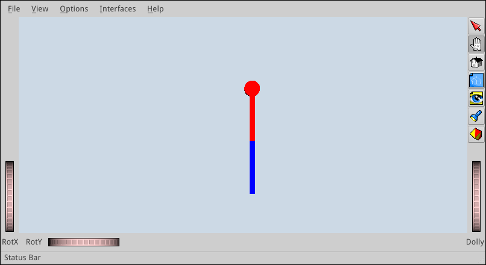
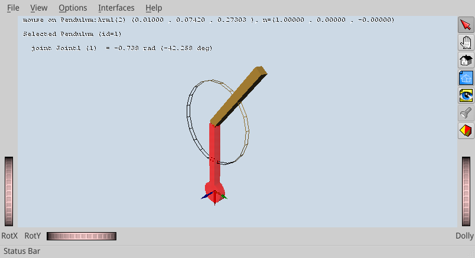

You can acquire knowledge from Wikipedia, books, articles, manuals, conversations with knowledgeable people, etc. You will then learn when, by experience, you "wire" this knowledge into your brain. If trials are hard and time consuming, your wiring will basically be a long (painful) line. But when trials are cheap and fast, the wiring will spread wider as you are free to explore many possibilities.
In motion planning, your first-hand experiences will mainly come from software, so you should get a good development environment. There are several options available today; the one I have been using during my PhD is OpenRAVE. In my opinion, it is very good for learning as the scripting level is in Python, which allows you to explore your objects interactively. (Core functionalities themselves are implemented in C++ for better performances.) For instance, in IPython:
robot.<TAB><TAB>gives the list of methods available forrobot;env.SetViewer?provides documentation on theSetViewer()function ofenv.
In this post, we will set up an initial environment, create our first robot and see how to manipulate it via the GUI. If you don't have it installed on your system, see the installation instructions for Ubuntu 14.04, or the official documentation if you run another system.
Environment and Robot¶
A basic Python script for OpenRAVE looks like this:
#!/usr/bin/env python import openravepy if __name__ == "__main__": env = openravepy.Environment() env.Load('env.xml') env.SetViewer('qtcoin') viewer = env.GetViewer() viewer.SetBkgndColor([.8, .85, .9]) # RGB tuple robot = env.GetRobots()[0]
To execute the script, run ipython -i myscript.py. The -i flag
tells IPython to spaw an interactive shell at the end. To get a shorter
command, you can also add the following two lines at the end of the Python
script:
import IPython IPython.embed()
And then make the script executable by chmod +x myscript.py. This way,
the interactive shell will always spawn at the end, and you can call your
script directly by:
./myscript.py
In this script, we define three objects: the environment env, the
viewer and the robot. The environment object is your main interface with
OpenRAVE, from which you will access robots, viewer, drawing primitives, etc.
It is defined in an XML file.
env.xml¶
In this example, our environment env.xml contains a single robot loaded
from a separate file:
<?xml version="1.0" encoding="utf-8"?> <Environment> <Robot file="double-pendulum.xml" /> </Environment>
double-pendulum.xml¶
We define the double pendulum in double-pendulum.xml using OpenRAVE's
XML format.
For more complex robots, you can also import COLLADA (1.5) models. The robots
consists of three bodies (Base, Arm0 and Arm1)
connected by two circular joints. We also add some mass information for inverse
dynamics, as well as some colors for readability:
<?xml version="1.0" encoding="utf-8"?> <Robot name="Pendulum"> <RotationAxis>0 1 0 90</RotationAxis> <!-- makes the pendulum vertical --> <KinBody> <Mass type="mimicgeom"><density>100000</density></Mass> <Body name="Base" type="dynamic"> <Translation>0.0 0.0 0.0</Translation> <Geom type="cylinder"> <rotationaxis>1 0 0 90</rotationaxis> <radius>0.03</radius> <height>0.02</height> <ambientColor>1. 0. 0.</ambientColor> <diffuseColor>1. 0. 0.</diffuseColor> </Geom> </Body> <Body name="Arm0" type="dynamic"> <offsetfrom>Base</offsetfrom> <!-- translation and rotation will be relative to Base --> <Translation>0 0 0</Translation> <Geom type="box"> <Translation>0.1 0 0</Translation> <Extents>0.1 0.01 0.01</Extents> <ambientColor>1. 0. 0.</ambientColor> <diffuseColor>1. 0. 0.</diffuseColor> </Geom> </Body> <Joint circular="true" name="Joint0" type="hinge"> <Body>Base</Body> <Body>Arm0</Body> <offsetfrom>Arm0</offsetfrom> <weight>4</weight> <axis>0 0 1</axis> <maxvel>3.42</maxvel> <resolution>1</resolution> </Joint> <Body name="Arm1" type="dynamic"> <offsetfrom>Arm0</offsetfrom> <Translation>0.2 0 0</Translation> <Geom type="box"> <Translation>0.1 0 0</Translation> <Extents>0.1 0.01 0.01</Extents> <ambientColor>0. 0. 1.</ambientColor> <diffuseColor>0. 0. 1.</diffuseColor> </Geom> </Body> <Joint circular="true" name="Joint1" type="hinge"> <Body>Arm0</Body> <Body>Arm1</Body> <offsetfrom>Arm1</offsetfrom> <weight>3</weight> <axis>0 0 1</axis> <maxvel>5.42</maxvel> <resolution>1</resolution> </Joint> </KinBody> </Robot>
After writing the two XML files and running the Python script, the GUI should pop up and display the pendulum, yet from above. To move the camera in front of it, do:
viewer.SetCamera([ [0., 0., -1., 1.], [1., 0., 0., 0.], [0., -1., 0., 0.], [0., 0., 0., 1.]])
Now, you should see something like this:

Using the GUI¶
The user interface has two modes: camera mode and object interaction mode. Press Esc to switch between the two.
Camera mode¶
Camera mode is activated by default. If not, click on the left-hand icon (second icon from top) in the right-hand panel of the GUI. In camera mode, your mouse behaves as follows:
- Left click: rotate the camera (you can also use the
RotXandRotYwheels at the bottom-left corner of the window) - Shift + left click or Middle button: translate the camera
- Left + middle button, or Mouse wheel: zoom in or out (you can also use
the
Dollywheel at the bottom-right of the window) - S + left click: zoom in on the point clicked. After this, the camera will stay centered on the object when rotating.
Interaction mode¶
You can switch between camera and interaction by pressing the Escape key of your keyboard. Alternatively, click on the red-arrow icon (first icon from top) in the right-hand panel to activate interaction mode.
In interaction mode, left-click on an object to select it. A cube appears around it, which you can use to perform two operations:
- Translation: click on a face of the cube and drag it around. It will translate the object in the two directions corresponding to the face of the cube.
- Rotation: click on an edge of the cube and drag it around. It will rotate the object along the rotation axis parallel to the selected edge and passing through the center of the cube.
The control cube will vanish if you click again on the object.
Interaction mode is also used to manipulate the joints of a robot directly.
Doing Ctrl + left click on a robot's link selects the parent joint of the
link (that is to say, the joint connecting the link to its parent in the
kinematic chain). A cylinder will then appear at the joint, which you can turn
around to rotate the joint. You can also vary the size of the cylinder by
ctrl-cliking it. Here is what you should see by selecting the link Arm1
of the pendulum:

The text area at the top-left corner of the 3D viewer displays relevant
information on the selected object. Here, it says that the pointer is on the
link Arm1 at the world-frame coordinates (x, y, z) = (0.10,
0.07, 0.27), with the surface normal at this point n = (1., 0., 0.).
The second line tells us that we selected the robot Pendulum, and the
third gives us information on the selected joint: name (Joint1), index
(1) and angle in radians and degrees. The joint index tells you the position of
the joint coordinate in the DOF vectors, which we will use later on to
manipulate the robot's configuration.
Summary of controls¶
Here is the summary of the controls we have seen so far. There are other buttons in the right-side panel, but honestly I never use them.
- Esc: switch between camera and interaction modes
- S + left click: center the camera on a surface point
- Ctrl + left click: (interaction mode) select a robot joint
- Left click: (camera mode) rotate the camera
- Left click: (interaction mode) select an object
- Shift + left click or Middle button: (camera mode) translate the camera
- Wheel: (camera mode) zoom in or out
Saving and setting the camera¶
You will notice that the camera's position and orientation (its transform)
are lost when you exit and run the script again. You can get the current camera
transform via the viewer object:
In [1]: viewer.GetCameraTransform() Out[1]: array([[-0.67725463, 0.23636616, -0.69674759, 0.40368351], [ 0.73512462, 0.25638653, -0.62758086, 0.43931767], [ 0.03029782, -0.93722835, -0.34739755, 0.42627937], [ 0. , 0. , 0. , 1. ]])
To save and restore your camera settings between sessions, set the camera
transform at the beginning of your script via viewer.SetCamera(). In
the case above:
viewer.SetCamera([ [-0.67725463, 0.23636616, -0.69674759, 0.40368351], [ 0.73512462, 0.25638653, -0.62758086, 0.43931767], [ 0.03029782, -0.93722835, -0.34739755, 0.42627937], [ 0. , 0. , 0. , 1. ]])
Forward kinematics¶
Let us go back to our Python script. All functions to manipulate the robot model are accessible via the robot object. First, to check its degree of freedom, try:
In [1]: robot.GetDOF() Out[1]: 2
OpenRAVE also calls "DOF" the generalized coordinates of the system, that is to say here the joint angles of the pendulum. The vector of generalized coordinates is called "DOF values", the vector of generalized velocities is called "DOF velocities", etc. Initially, the two joint angles are zero, so:
In [2]: robot.GetDOFValues() Out[2]: array([ 0., 0.])
To set the pendulum to a different configuration, for instance , do:
In [3]: robot.SetDOFValues([3.14 / 4, 3.14 / 4])
You will see the robot updated to a different pose in the GUI. This operation, the geometric update of all links of the robot from the joint-angle vector, is called forward kinematics.
Playing a trajectory¶
Let us interpolate and play trajectories on the pendulum. First, define
a simple Trajectory class containing the duration and
joint-angle function of the trajectory:
class Trajectory(object): def __init__(self, T, q_ftn): self.T = T # duration, in seconds self.q = q_ftn
We generate a simple linear interpolation between the current state of the robot (which may be anything: random, set by the user in the GUI, etc.) The default duration will be s.
from numpy import array, pi def get_swing_trajectory(robot, T=1.): q0 = robot.GetDOFValues() q1 = array([pi, 0.]) def q(t): x = 0. if t < 0. else 1. if t > T else (t / T) return (1. - x) * q0 + x * q1 return Trajectory(T, q)
Finally, we play the trajectory by setting the DOF values at regular time intervals:
from numpy import arange import time def play_trajectory(robot, traj): dt = 1e-2 # play at 100 Hz for t in arange(0., traj.T + dt, dt): robot.SetDOFValues(traj.q(t)) time.sleep(dt)
You can check out the result with:
traj = get_swing_trajectory(robot) play_trajectory(robot, traj)
Whatever the current configuration of the robot is, you should see it swing up to its upward vertical configuration.
To go further¶
You now have your first environment set up and you know how to visualize and update your robot from a joint-angle vector by forward kinematics. Next, you will want to compute your joint-angle vectors to achieve a particular goal, for instance: how to put the tip of the robot at a specific location in space? The answer to this question is called inverse kinematics (IK).
For robotic arms, OpenRAVE provides a closed-form symbolic IK solver that you can call via the inversekinematics module. With symbolic IK, you first spend time compiling the IK solution to your robot model into a C++ program. Then, you can compile and execute this program at runtime to solve for inverse kinematics faster than with any other numerical method. See Rosen Diankov's PhD thesis for details.
Unfortunately, symbolic IK only applies to robots with up to 6-7 degrees of freedoms. For large-DOF mobile robots such as humanoids, the state of the art is to use multi-task inverse kinematics based on quadratic programming (QP) or hierarchical quadratic programming (HQP). A ready-to-use QP-based IK solver for OpenRAVE is provided in the pymanoid module.
Discussion ¶
Feel free to post a comment by e-mail using the form below. Your e-mail address will not be disclosed.